Glass, crystals and grains: how the microstructure of a ceramic decides its strength, toughness, translucency and fatigue life.
Learning objectives
By the end of this lecture you can…
1
Explain why ceramics are brittle, and distinguish strength, fracture toughness and fatigue.
2
Classify feldspathic porcelains, lithium disilicate and zirconias (3Y, 4Y, 5Y) by their microstructure.
3
Relate glass content, crystal type, size and phase to strength and translucency.
4
Explain the main strengthening and toughening mechanisms: residual stress, crack deflection, bridging and transformation toughening.
5
Describe what firing, crystallisation and sintering do to the microstructure.
6
Relate each class to its main applications and material-related limitations, and compare ceramics with resin composites using qualified statements.
Lecture map
Six parts, one question: what does the microstructure do?
Each material is followed through the same sequence: definition and applications → composition → microstructure → strengthening → mechanical, optical, wear and chemical behaviour → surface and adhesion.
01 · ~25 minIntroductionWhat a ceramic is; glass vs crystal; how strength and toughness are measured
02 · ~35 minFeldspathic porcelainsGlass with leucite; firing in the dental furnace; veneering
06 · ~20 minSynthesisFour tables; ceramics vs resin composites
Scope of this lectureThis is a materials-science lecture. Tooth preparation, cementation protocols, layering and CAD/CAM workflows belong to the clinical and CAD/CAM lectures (14) and are not covered here.
Part 1 of 6
01
Introduction: what makes a material a ceramic
Clinical vocabulary· bonding and brittleness· glass vs crystal· classes· how properties are measured
Part 1 · Introduction
A clinical example: anterior teeth restored with ceramics
The same patient before and after: the restorations must survive chewing for years and match the neighbouring teeth.
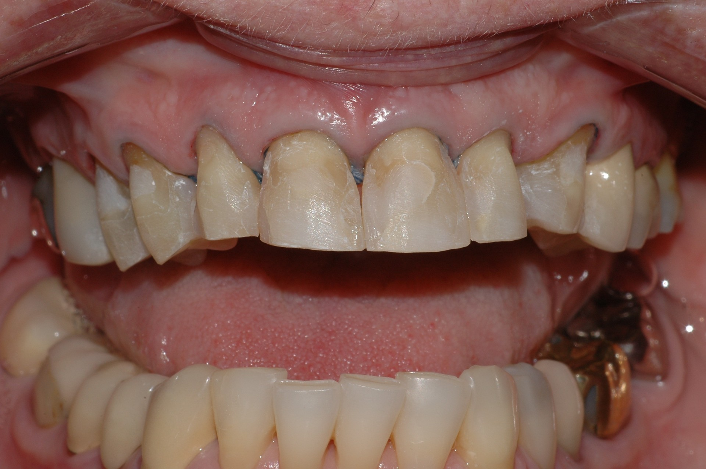
Teeth prepared for restorations
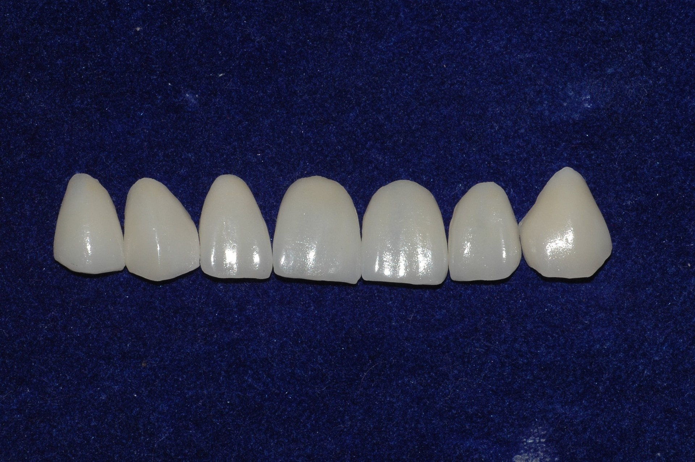
The ceramic restorations
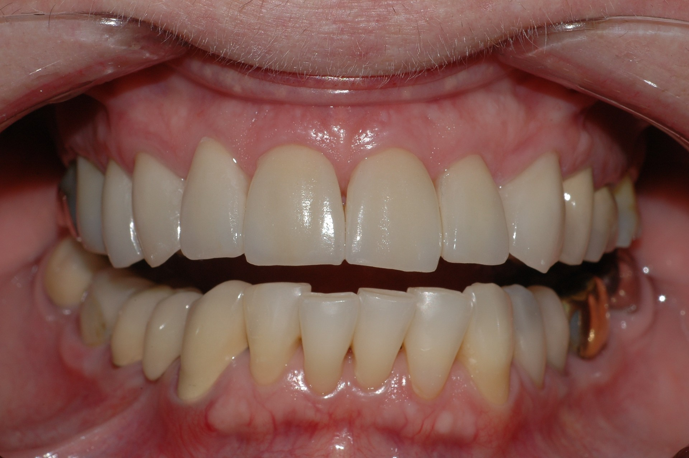
Restorations in place
Clinical photographs from the course archive.
Part 1 · Introduction
Clinical vocabulary: the restorations made from ceramics
Laminate veneer — a thin shell bonded to the facial surface (not to be confused with veneering porcelain, a layer fired onto a framework)
Inlay / onlay — fills a cavity within the cusps / also replaces one or more cusps
Crown — covers the whole prepared tooth
Fixed dental prosthesis (FDP) — replaces a missing tooth; the pontic (artificial tooth) is joined by connectors to the abutments (supporting teeth)
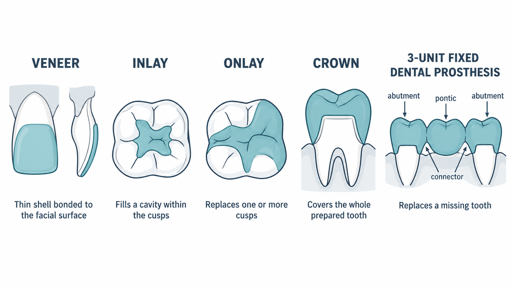
Part 1 · Introduction
Ceramic restorations and devices
Ceramics also appear outside restorative dentistry, for example as tooth-coloured orthodontic brackets.
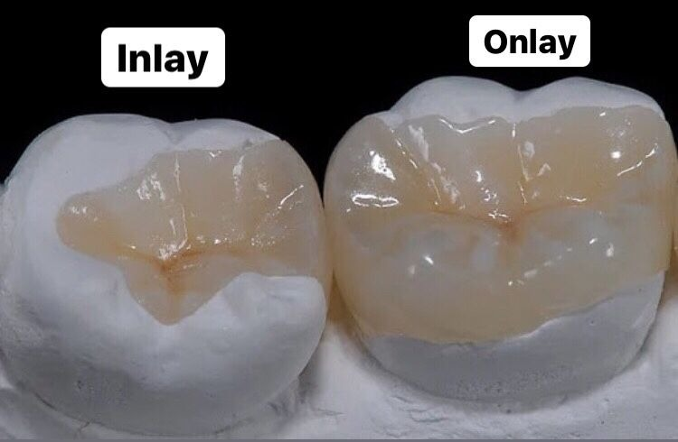
Inlay and onlay
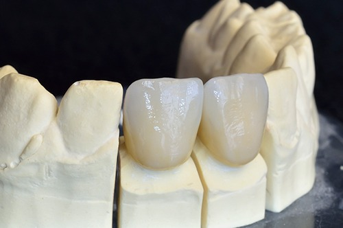
Crowns on a cast
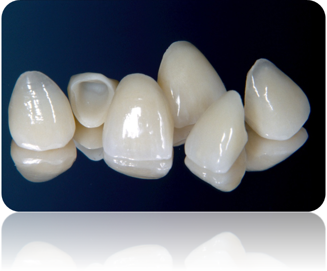
Crowns
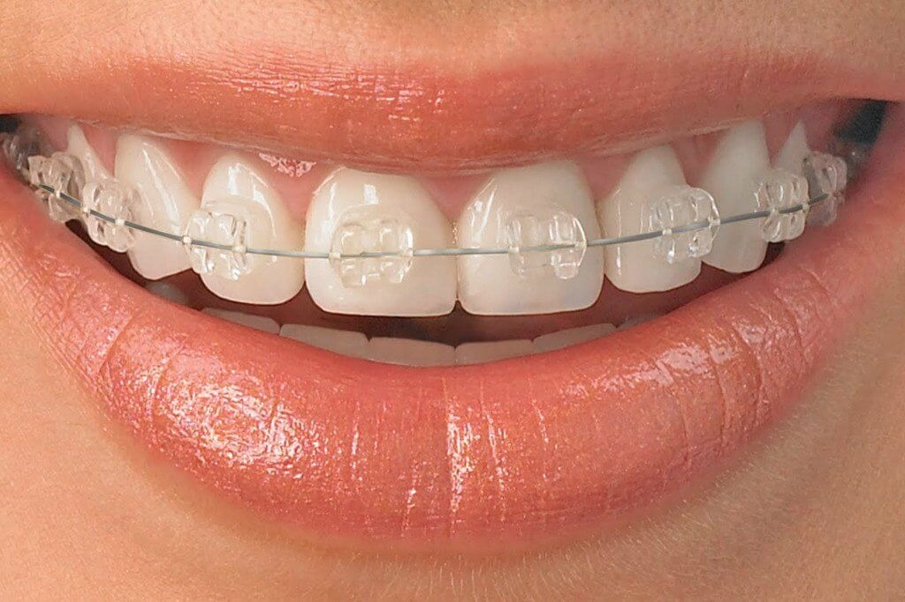
Orthodontic brackets
Photographs from the course archive.
Part 1 · Introduction
Monolithic and bilayer restorations
Monolithic
The restoration is made of one material throughout (e.g., a lithium disilicate or zirconia crown).
Bilayer (veneered)
A stronger framework (metal or zirconia) is covered by a veneering porcelain that provides the appearance.
NoteThe interface between framework and veneer adds a new problem: the two materials must contract together on cooling (Part 2).
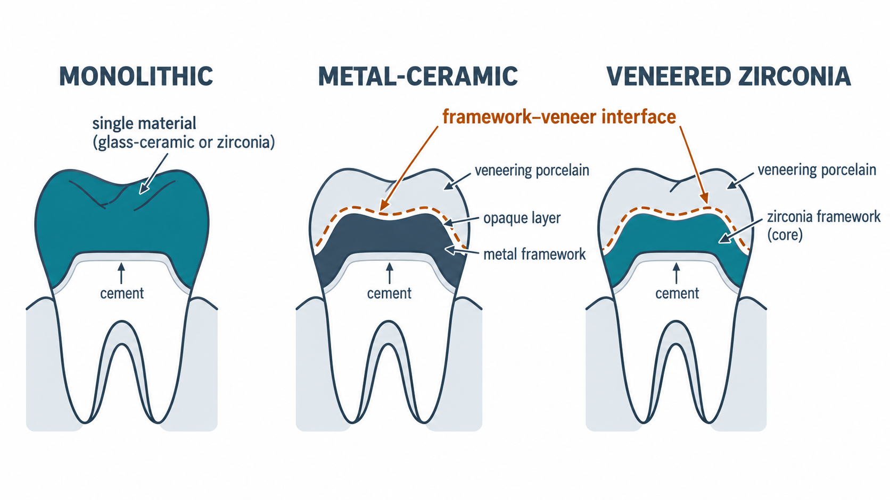
Part 1 · Introduction
Bilayer restorations in practice
Metal-ceramic and veneered-zirconia restorations combine a strong core with a glassy, aesthetic surface layer.
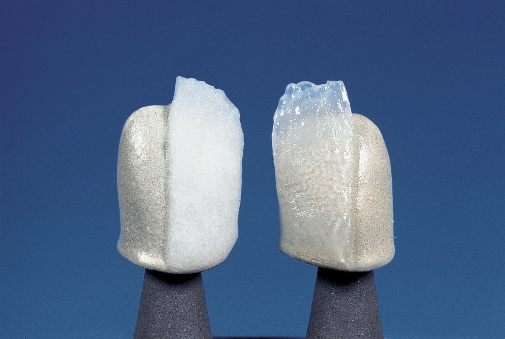
Metal-ceramic: porcelain on metal copings (thin cap-shaped frameworks)
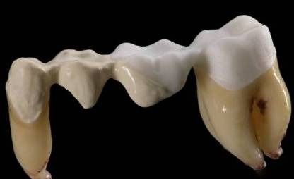
Zirconia framework, milled
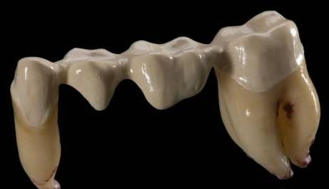
After sintering
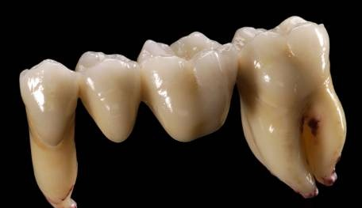
After veneering with porcelain
Photographs from the course archive.
Part 1 · Introduction
What a ceramic is
Ceramic
An inorganic, non-metallic solid, usually a compound of metallic and non-metallic elements (in dentistry mostly oxides: SiO₂, Al₂O₃, ZrO₂, Li₂O…), held together by ionic and covalent bonds and shaped and consolidated by heat.
Practical consequenceIonic–covalent bonding gives high melting points, high stiffness and hardness, and chemical stability — and also brittleness.
Ionic
charged ions; like charges repel
atoms cannot slide past each other freely
Covalent
directional bonds
bonds resist being bent or re-formed
Part 1 · Introduction
Why ceramics are brittle
In a metal, planes of atoms can slip (dislocation motion): the material deforms plastically and blunts a crack tip.
In an ionic ceramic, slipping one plane brings like charges face to face; in a covalent ceramic, directional bonds resist slip.
With almost no plastic deformation, stress at the tip of a flaw is not relieved: the crack runs.
Clinical significanceCeramics fail suddenly, by fracture or chipping, without the warning of permanent bending seen in metals.
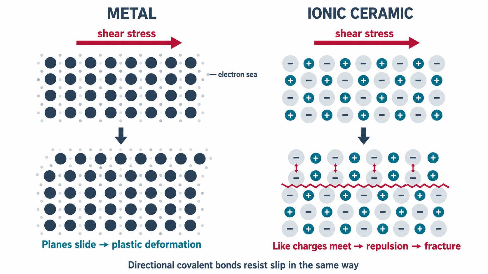
Part 1 · Introduction
Linear-elastic behaviour up to fracture
A ceramic loaded in tension deforms elastically (reversibly) and then fractures — there is no plastic region.
A metal yields and deforms plastically before it fails; a polymer can deform extensively.
The steep slope reflects a high elastic modulus: dental ceramics range from about 65 to 250 GPa.
InterpretationBecause there is no yielding, the stress needed to break a ceramic is set by its largest flaw (Part 5).
Schematic stress–strain curves (not to scale).
Kelly et al. 2017 (linear-elastic, brittle, low damage tolerance); modulus range: Belli et al. 2014.
Part 1 · Introduction
Ceramics are weak in tension and strong in compression
In bending, the loaded surface is compressed and the opposite surface is stretched (tension).
Compression tends to close flaws; tension opens them.
Fracture therefore starts on the tensile surface — in a crown, often the intaglio surface (the inner, fitting surface facing the cement).
Clinical significanceWhere tension develops in a restoration matters more than how hard the patient bites.
A bar in bending: compression under the load, tension on the opposite surface.
Al-Johani et al. 2024 (ceramics weaker in tension than in compression); Kelly et al. 2017 (intaglio-surface origins).
Part 1 · Introduction
Crystalline and amorphous arrangements of the same atoms
Silica can be a crystal (repeating rings, long-range order) or a glass (distorted network, short-range order only).
Two-dimensional schematic of SiO₄ tetrahedra (Si teal, bridging O white).
Part 1 · Introduction
Network modifiers turn silica into a workable glass
In pure silica every oxygen bridges two silicon atoms: the network is rigid and softens only at very high temperature.
The less connected network softens at a lower temperature — this is what lets a dental porcelain fuse in a furnace.
MechanismFewer bridges per tetrahedron → lower viscosity at a given temperature → lower firing temperature.
Silica glass without and with alkali modifiers (schematic).
Part 1 · Introduction
Glassy and crystalline phases: what each contributes
Glass phase (amorphous)
No long-range order; isotropic (same properties in every direction)
Gives translucency and allows fusion at firing temperature
Dissolved by hydrofluoric acid → micromechanical retention
Low fracture toughness; susceptible to water-assisted crack growth
Crystalline phase
Ordered lattice; may be anisotropic (direction-dependent properties)
Raises strength and toughness (deflects or arrests cracks)
Can control thermal expansion and opacity
Scatters light when its refractive index differs from the matrix
Nejat 2025; Denry & Holloway 2010; Kelly et al. 2017.
Part 1 · Introduction
Three microstructural classes of dental ceramics
Predominantly glassy — glass with a minority of crystals (feldspathic porcelain).
Glass-ceramic — glass in which a large volume of crystals has been grown (lithium disilicate).
Polycrystalline — densely packed grains, no glass phase (alumina, zirconia).
General ruleCrystalline content runs from roughly 35 to 99 vol% across all-ceramic systems; more crystals generally means more strength — but not necessarily less translucency (Part 6).
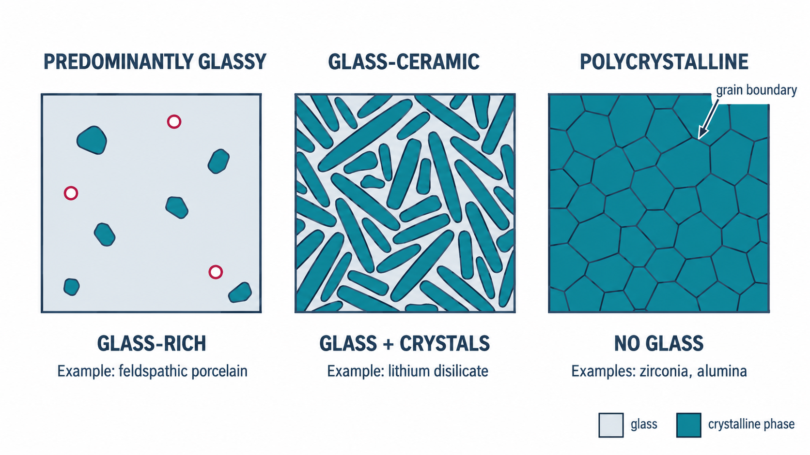
Denry & Holloway 2010 (35–99 vol% crystalline). Nejat 2025 groups the same materials as glass-matrix, polycrystalline and resin-matrix ceramics.
Part 1 · Introduction
Terminology used in this lecture
Term
Meaning here
Example
Porcelain
A predominantly glassy ceramic made by firing a feldspar-based powder
Veneering porcelain on metal or zirconia
Glass-ceramic
A glass in which crystals have been grown by a controlled heat treatment (by the manufacturer, or after shaping)
Lithium disilicate
Polycrystalline ceramic
A dense aggregate of crystalline grains, sintered from powder, with no glass between grains
Alumina; 3Y, 4Y, 5Y zirconia
Resin-matrix ‘ceramic’
Ceramic filler or network combined with a polymer
Covered in Lecture 14 (CAD/CAM materials)
Classification terms after Nejat 2025 and Zhang et al. 2023.
Part 1 · Introduction
Real microstructures: crystals in glass
Electron micrographs of etched surfaces: the glass is dissolved, so the crystals stand out.
Leucite (feldspathic and leucite-reinforced ceramics): rounded, separated crystals.
Lithium disilicate: elongated, interlocked crystals filling most of the volume.
InterpretationCrystal volume fraction, size and shape differ by an order of magnitude between materials — and so do their properties.
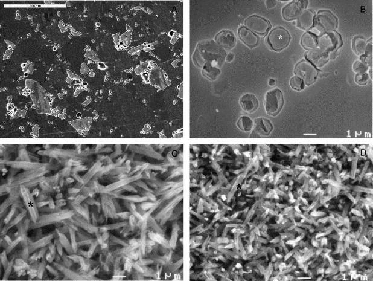
Leucite (top) and lithium disilicate (bottom) microstructures (SEM).
Micrographs from the course archive (original source not identified).
Part 1 · Introduction
General characteristics of dental ceramics
Property
Typical behaviour
Qualification
Stiffness (modulus)
High (≈ 65–250 GPa)
Glass-rich ceramics at the low end, zirconia at the high end
Hardness
High
Does not by itself predict wear of the opposing enamel
Fracture toughness
Low (≈ 0.7 to 7 MPa·m½)
Varies about tenfold between classes
Tension vs compression
Much weaker in tension
Fracture starts from tensile surfaces
Chemical stability
High
Glass phases undergo water-assisted crack growth
Optical properties
Can be highly translucent and tooth-like
Depends on glass content, crystals, pores and thickness
Belli et al. 2014 (modulus, KIc ranges); Kyaw et al. 2024 (hardness and wear); Kelly et al. 2017; Al-Johani et al. 2024.
Part 1 · Introduction
How flexural strength is measured
Ceramics are rarely tested in pure tension: specimens are tested in bending.
Uniaxial: bars in 3- or 4-point bending. Biaxial: discs on a ring or three balls.
Flexural strength = the tensile stress at the surface at the moment of fracture.
Methodological limitationThe same material gives different numbers with different geometries, specimen sizes and surface finishes. Compare strengths only within one method.
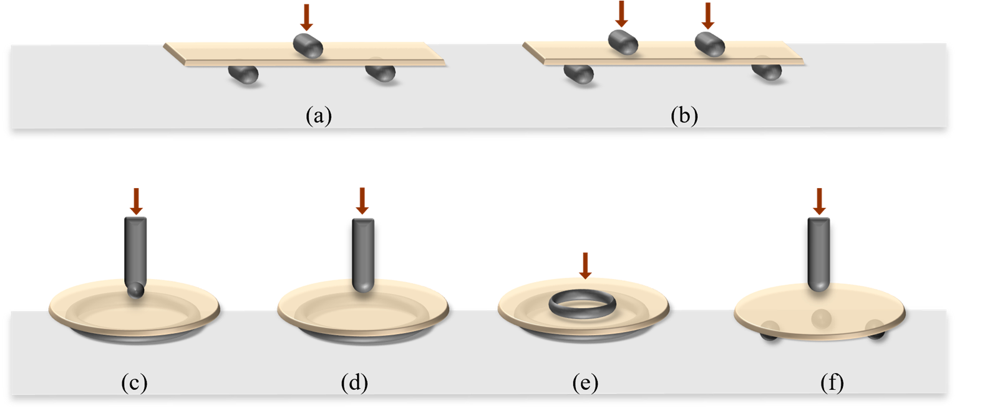
Test configurations. Al-Johani et al. 2024, Prosthesis, CC BY 4.0.
Al-Johani et al., Prosthesis 2024 (Fig. 1, CC BY 4.0); ISO 6872:2023.
Part 1 · Introduction
Fracture toughness: resistance to crack propagation
Fracture toughness, KIc
The critical stress intensity at the tip of a crack at which the crack propagates unstably. Units: MPa·m½.
DefinitionK, the stress intensity, describes how strongly a crack tip concentrates stress: K = Y·σ·√(πc), where σ is the applied stress, c the flaw size and Y a geometry factor (≈ 1.12 for a surface crack). Fracture occurs when K reaches KIc.
Methodological limitationMeasured KIc depends on the method (pre-cracked beams, chevron notch, indentation); indentation values are the least reliable.
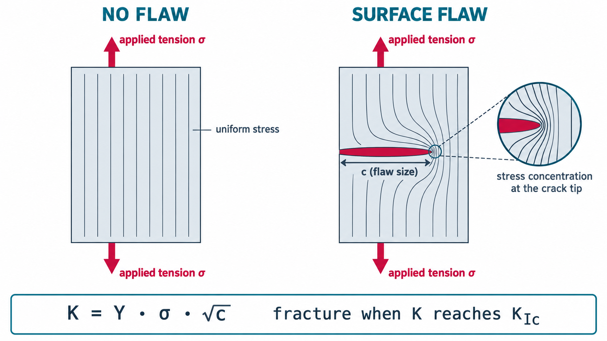
Cesar et al. 2017 (ADM guidance, fracture toughness testing).
Part 1 · Introduction
ISO 6872 links strength and toughness to indications
Minimum flexural strength
Minimum KIc
Example of indication
50 MPa
0.7 MPa·m½
Veneering of metal or ceramic substructures; adhesively cemented anterior single units
100 MPa
1.0
Adhesively cemented monolithic single units, anterior or posterior
300 MPa
2.0
Single units and 3-unit prostheses not involving molars
500 MPa
3.5
3-unit prostheses involving molars
800 MPa
5.0
Prostheses of four or more units
Origin of the thresholdThese are minimum laboratory values set by an international standard; they classify materials but do not predict how long a given restoration will last.
ISO 6872:2023 as tabulated by Al-Johani et al. 2024 (CC BY 4.0). Indications abbreviated.
Part 2 of 6
02
Feldspathic porcelains
Composition· leucite· firing in the furnace· properties· veneering and bonding
Part 2 · Feldspathic porcelains
Feldspathic porcelain: definition and applications
Feldspathic porcelain
A predominantly glassy ceramic produced by firing a feldspar-based powder; conventional porcelains contain about 15–25 vol% leucite crystals in an aluminosilicate glass.
Veneering of metal frameworks (metal-ceramic) and zirconia frameworks
Laminate veneers and other thin, highly aesthetic restorations
Industrially made feldspathic blocks for milling (≈ 30 vol% crystalline)
Porcelain built on metal copings.
Denry & Holloway 2010; Nejat 2025.
Part 2 · Feldspathic porcelains
Conventional porcelain and leucite-reinforced glass-ceramic
Conventional feldspathic porcelain
≈ 15–25 vol% leucite
Built from powder and sintered layer by layer
Lowest mechanical properties among dental ceramics
Main use: veneering
Leucite-reinforced glass-ceramic
≈ 35–45 vol% leucite, finely dispersed
Supplied already crystallised; pressed or milled as a single piece — classed as a glass-ceramic
Strength and KIc about twice those of feldspathic porcelain
Main use: single-unit restorations
Denry & Holloway 2010; Nejat 2025.
Part 2 · Feldspathic porcelains
Raw materials: feldspar, quartz and kaolin
Feldspar — potassium (KAlSi₃O₈) or sodium (NaAlSi₃O₈) aluminosilicate: the main constituent; melts to form the glass.
Quartz (SiO₂) — silica, the network former.
Kaolin (Al₂O₃·2SiO₂·2H₂O) — a clay, present in traditional porcelain recipes.
NoteThe manufacturer melts, quenches and grinds these raw materials into a fine powder; the clinician or technician receives the powder, not the minerals.
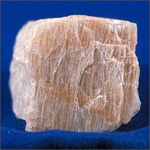
Feldspar mineral
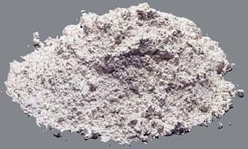
Porcelain powder
Nejat 2025.
Part 2 · Feldspathic porcelains
What each group of oxides does
Oxides
Role
SiO₂
Forms the glass network
Al₂O₃
Joins the network as an aluminosilicate; part of feldspar and leucite
K₂O, Na₂O
Network modifiers (fluxes): lower the firing temperature
Metal-oxide pigments
Give shade
Opacifying oxides
Increase opacity (e.g., to mask a metal framework)
Rare-earth oxides
Give fluorescence under ultraviolet light
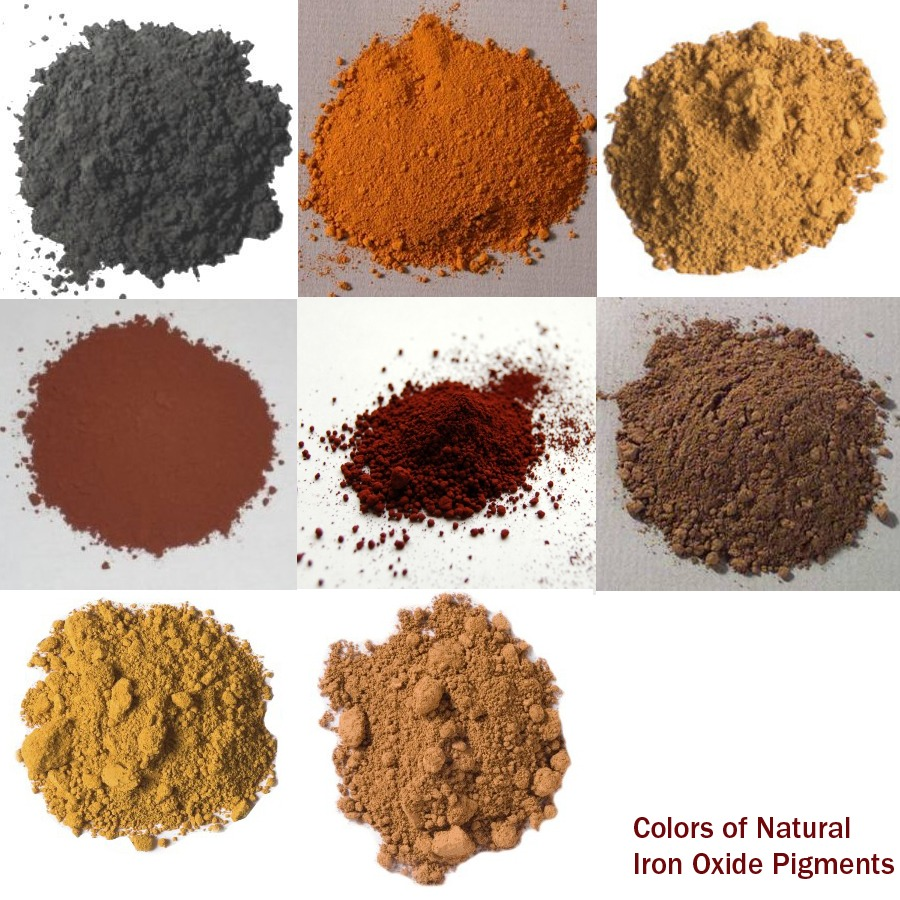
Metal-oxide pigments of the kind used to colour ceramics.
Fluorescence: Al-Johani et al. 2024. Pigment photograph from the course archive.
Part 2 · Feldspathic porcelains
Leucite: the crystal of feldspathic porcelains
Leucite (KAlSi₂O₆) forms when feldspar is heated and melts incongruently — it decomposes into a liquid plus a different crystal (≈ 1150–1530 °C).
It changes from cubic to tetragonal (crystal arrangements of different symmetry) on cooling at ≈ 625 °C, with a 1.2 % volume change.
Its coefficient of thermal expansion (CTE: fractional length change per kelvin, which also governs contraction on cooling) is very high: 20–25 × 10⁻⁶ K⁻¹, against ≈ 8.6 × 10⁻⁶ K⁻¹ for the feldspar glass alone.
Practical consequenceBy adjusting the leucite content, the manufacturer tunes the thermal expansion of the porcelain to match the framework it will be fired onto.
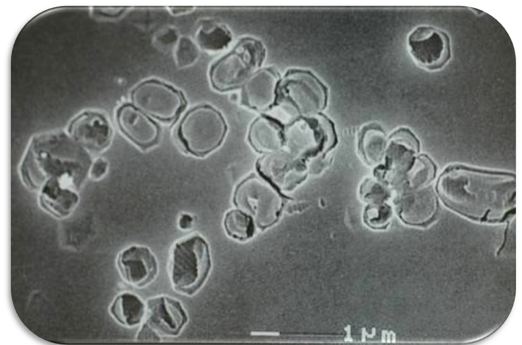
Leucite crystals in a porcelain (SEM; scale bar 1 µm).
Denry & Holloway 2010.
Part 2 · Firing and the dental furnace
From powder to restoration: why porcelain is fired
Powder + liquid
Porcelain powder is mixed with water (or a modelling liquid) to a paste.
Build-up
The paste is applied in layers and condensed to pack the particles.
Firing
In the furnace the glass particles soften and fuse: the porous compact becomes dense porcelain.
NoteFiring is not melting: the particles fuse at their surfaces while the restoration keeps its shape.
Above the glass transition, softened particles join at their contact points.
Pores shrink
Surface tension pulls the glass to reduce its surface area; the compact shrinks.
Pores close
Isolated pores remain, holding trapped gas.
MechanismThe driving force is surface tension; the rate is controlled by the viscosity of the glass, which falls steeply as temperature rises.
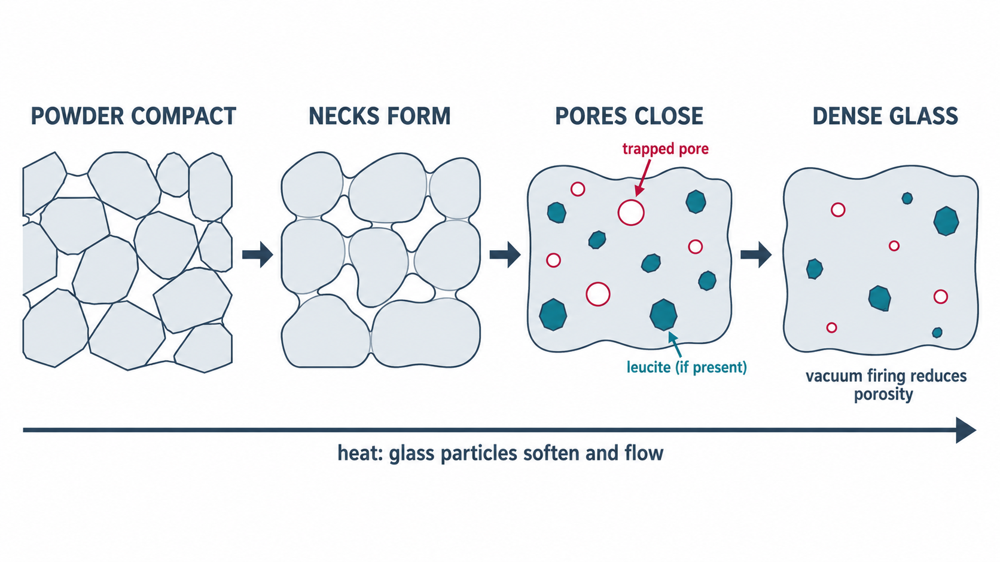
Wadsworth et al., Proc R Soc A 2016; Cheung & Darvell, Dent Mater 2002.
Part 2 · Firing and the dental furnace
Firing stages seen under the microscope: low, medium and high bisque
Bisque: fired but unglazed porcelain; low, medium and high describe increasing degrees of fusion. As firing proceeds, particle edges round off, necks grow and the compact becomes continuous glass with fewer, rounder pores.
Unfired powder
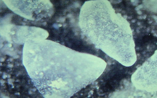
Low bisque
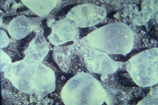
Medium bisque
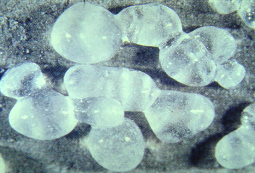
High bisque
Images from the course archive. The bisque terms are workshop descriptors of the firing stage, not standardised measurements.
Part 2 · Firing and the dental furnace
The same stages in the scanning electron microscope
Porosity falls and the surface becomes smoother as the glass flows.
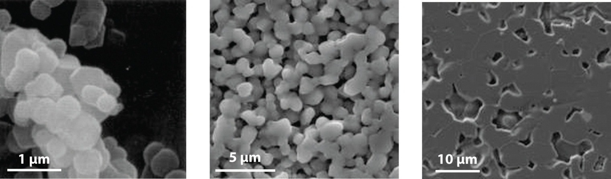
Low, medium and high bisque (scale bars 1, 5 and 10 µm — note the change in magnification).
Micrographs from the course archive.
Part 2 · Firing and the dental furnace
Why porcelain is fired under vacuum
When pores close, the gas trapped inside resists further shrinkage.
Under vacuum, pores close with little gas inside.
When the vacuum is released while the glass is still soft, atmospheric pressure helps the pores collapse.
Practical consequencePorosity falls from about 4.6 % (air firing) to about 0.5 % (vacuum firing): a denser, more translucent porcelain.
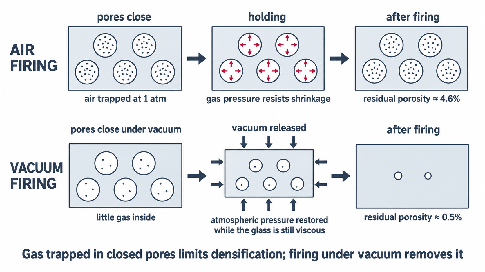
McCabe & Walls, 9th ed. (4.6 % → 0.5 %); A Clinical Guide to Applied Dental Materials, ch. 22.
Part 2 · Firing and the dental furnace
Firing shrinkage
Removing the pores between particles makes the porcelain shrink during firing.
Textbooks report values from about 10 to 20 % (some linear, some volumetric) — the exact value depends on how well the powder was packed.
The porcelain is therefore built up oversize and corrected in further firings.
MechanismBetter condensation packs the particles more densely, so less shrinkage remains for the furnace.
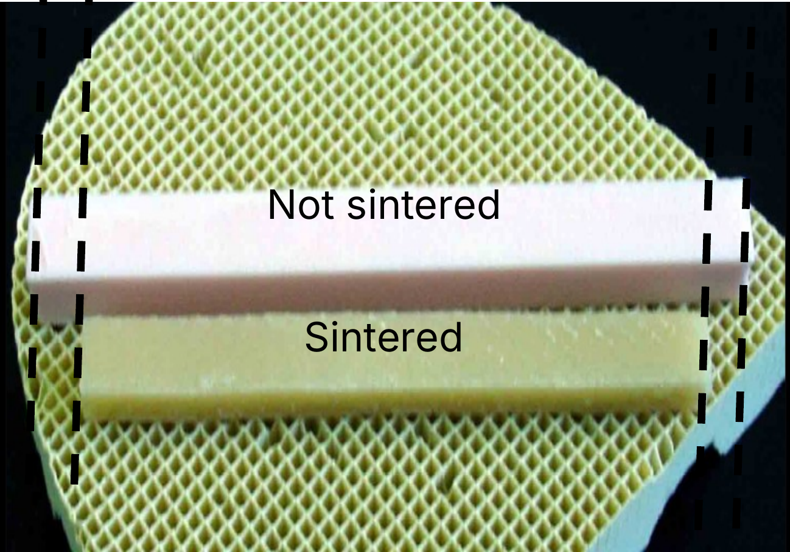
A porcelain bar before and after sintering.
A Clinical Guide to Applied Dental Materials, ch. 22; Phillips' Science of Dental Materials, ch. 10. Reported values differ between textbooks.
Part 2 · Firing and the dental furnace
Temperature matters more than time
Under-firing
Particles not fully fused
Higher porosity
Weaker, less translucent porcelain
Over-firing
Glass flows too much: loss of shape (slumping)
Prolonged high temperature can increase porosity again
Repeated over-firing may alter crystalline content
InterpretationPorosity reduction in dentine porcelain is much more sensitive to temperature than to time; minimum porosity was obtained at high temperature and short time.
Cheung & Darvell, Dent Mater 2002;18:163–73; A Clinical Guide to Applied Dental Materials, ch. 22.
Part 2 · Firing and the dental furnace
Cooling changes the leucite content
Leucite can keep crystallising while the porcelain cools slowly through the high-temperature range.
Slow cooling inside the closed furnace increased the leucite volume fraction in every porcelain tested (reported increases of 8.5–55.8 %, mean 26.9 %).
More leucite = higher thermal expansion of the porcelain.
Clinical significanceA porcelain–metal pair that was thermally compatible can become incompatible if the cooling procedure changes.
8.5–55.8 %
increase in leucite fraction
slow cooling in furnace vs room air; mean 26.9 %
Mackert & Evans, J Dent Res 1991;70:137–9.
Part 2 · Firing and the dental furnace
Repeated firings
Each correction requires another firing cycle.
Non-essential repeated firings can cause devitrification (crystallisation of the glass): cloudiness and a change in thermal expansion.
Isothermal holds at 750 °C raised the leucite fraction of commercial porcelains by 6.1–21.3 %.
Colour did not change over the first five firings in one study; slight changes appeared later.
Practical consequenceThe number of firings is itself a processing variable that changes the microstructure.
Phillips' Science of Dental Materials, ch. 10; Mackert et al., J Dent Res 1995;74:1259–65; Barghi & Goldberg, J Prosthet Dent 1977;37:173–5.
Part 2 · Firing and the dental furnace
Glaze firing: self-glaze and overglaze
Self-glaze — a final firing lets the surface of the porcelain itself flow into a thin glassy layer.
Overglaze — a low-fusing transparent glass is applied and fired over the restoration.
A self-glaze is preferred for chemical durability; the overglaze contains more modifiers.
Important qualificationSources disagree on whether glazing increases strength; in one study on pressed glass-ceramics, glazing did not change strength and polished specimens were strongest.
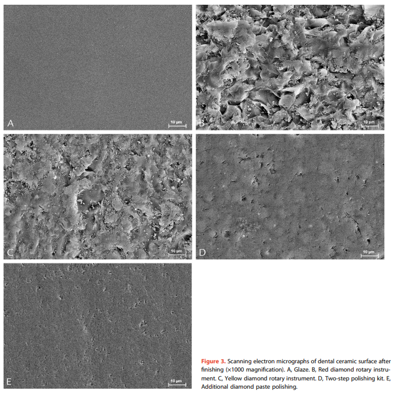
Ceramic surfaces after glazing, grinding and polishing (SEM).
Veneered zirconia: temperature gradients during cooling
During fast cooling the porcelain surface cools before the porcelain next to the zirconia core.
Measured temperature differences across veneered crowns exceeded 100 °C.
Slow cooling to the glass transition (≈ 600 °C) reduced, but did not eliminate, the gradient (≤ 88 °C) and the residual stress.
Important qualificationIn other tests, the cooling protocol had no effect on chipping resistance: the clinical benefit of slow cooling is not established.
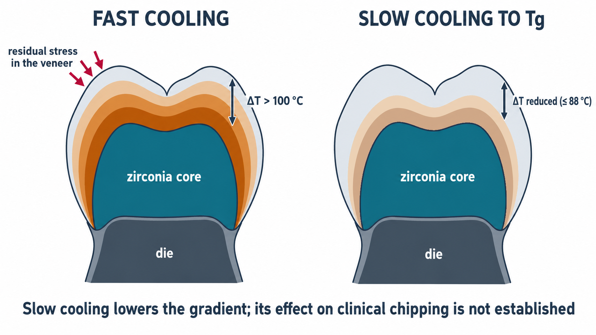
Tholey, Swain & Thiel, Dent Mater 2011;27:1102–10; de Lima et al., J Mech Behav Biomed Mater 2022;126:104995.
Part 2 · Feldspathic porcelains
Leucite and glass contract differently: microcracks and residual stress
On cooling, leucite contracts much more than the surrounding glass.
This creates tangential compression in the glass around each crystal, and tension at the interface.
Where the tension is high enough, microcracks form around and through the crystals.
MechanismThermal-expansion mismatch between two phases converts a temperature change into internal stress.
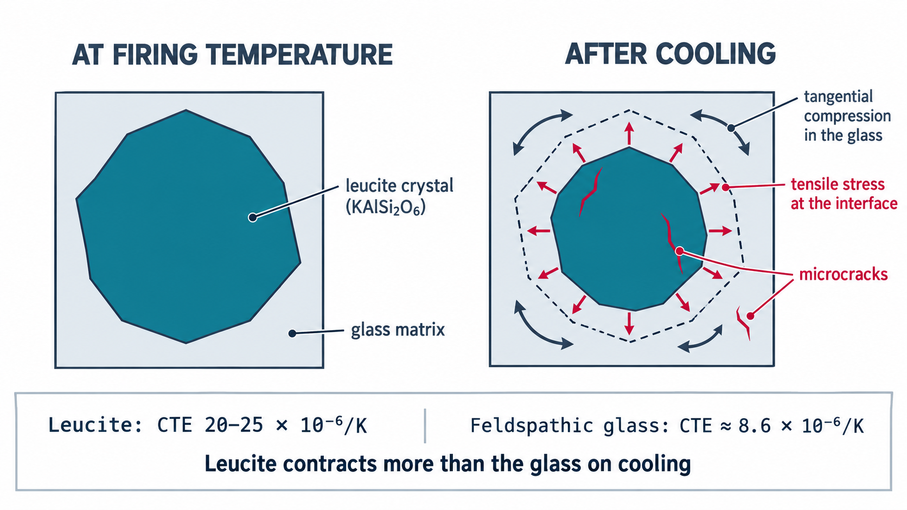
Denry & Holloway 2010; Denry, Mackert et al., J Dent Res 1996;75:1928–35.
Part 2 · Feldspathic porcelains
Leucite microcracks: help or harm?
Can strengthen
Tangential compression around crystals can deflect approaching cracks
When cubic leucite was stabilised (no transformation stress), strength decreased
Can weaken
Microcracks can coalesce and decouple crystals from the glass
Coalescence degrades strength and fracture toughness
Important qualificationThe net effect depends on crystal size, amount and distribution — “more leucite is stronger” is not a safe generalisation.
Denry & Holloway 2010; Denry, Mackert et al., J Dent Res 1996.
Part 2 · Feldspathic porcelains
Mechanical properties of feldspathic porcelain
≈ 60–70 MPa
flexural strength
e.g., 61 ± 5 MPa (Denry); 66 MPa, 4-point bending in water (Belli)
≈ 0.7–1.5
KIc, MPa·m½
range for glass-rich ceramics
low end
elastic modulus
of the 65–250 GPa ceramic range
InterpretationThe lowest mechanical properties of the dental ceramics, dominated by the large amount of glass — which is why porcelain is used mainly supported by a framework or bonded to tooth.
Denry & Holloway 2010; Belli et al. 2014.
Part 2 · Feldspathic porcelains
Surface flaws in fired porcelain
Fired porcelain contains pores, inclusions and cracks.
Surface flaws are the most dangerous because the surface carries the highest tensile stress in bending.
These flaws are the starting points of fracture and fatigue (Part 5).
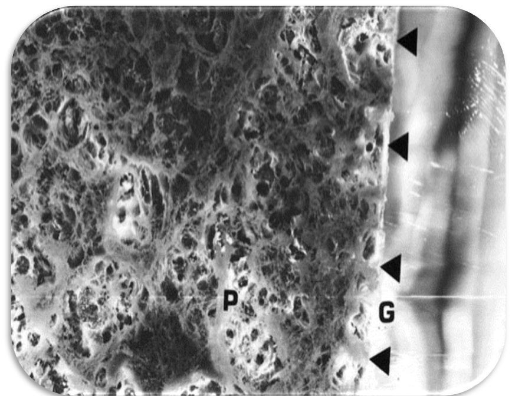
Pores (P) at a porcelain surface (SEM).
Denry & Holloway 2010 (pores, cracks, inclusions). Micrograph from the course archive (original source not identified).
Part 2 · Feldspathic porcelains
Why feldspathic porcelain is translucent
Light passes through a material until it meets a change in refractive index.
Leucite has a refractive index close to that of the glass, so it scatters little light.
Pores and opacifier particles have a very different refractive index and scatter strongly.
MechanismScattering occurs at interfaces; its strength depends on the refractive-index difference and on particle size relative to the wavelength of light.
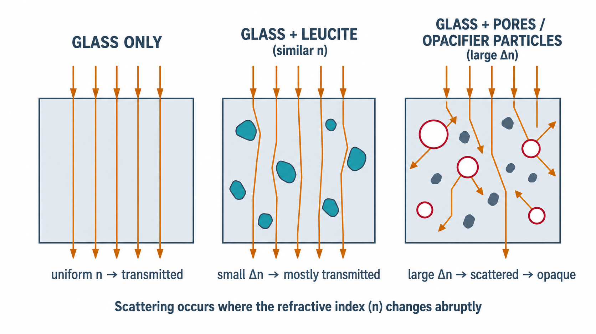
Nejat 2025; Al-Johani et al. 2024.
Part 2 · Feldspathic porcelains
Translucency and fluorescence
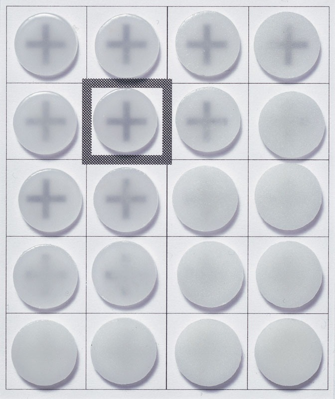
Translucency: discs over a gridFluorescence under UV light
MechanismNatural teeth fluoresce under ultraviolet light; porcelains reproduce this with rare-earth oxides. Fluorescence may decrease with repeated firing.
Al-Johani et al. 2024. Photographs from the course archive.
Part 2 · Feldspathic porcelains
Metal-ceramic: matching thermal contraction
Porcelain is fired onto the metal at high temperature; both contract on cooling.
The porcelain is formulated to contract slightly less than the metal, so it ends in mild compression.
If the porcelain contracts more, it ends in tension — cracking or chipping.
General ruleDifferences in thermal expansion (contraction) coefficient of ≤ 0.5 × 10⁻⁶ K⁻¹ are considered thermally compatible.
A glass converted, by a controlled heat treatment, into a material with a large volume of crystals grown inside the glass (nucleation and growth). In lithium disilicate this final step can be done after milling.
Lithium disilicate (Li₂Si₂O₅): crystals ≈ 65–70 vol% in a residual glass
Used for monolithic crowns, veneers, inlays and onlays; available pressable or as blocks for milling
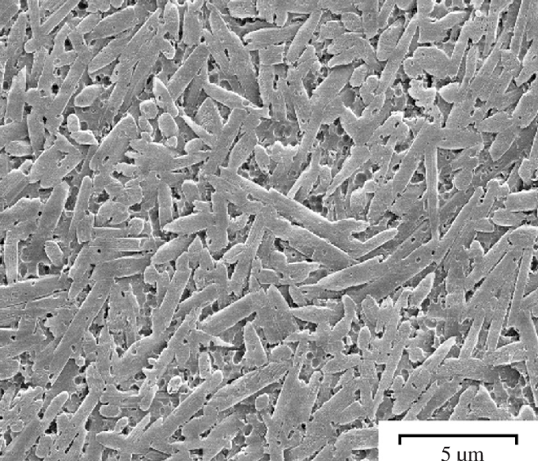
Lithium disilicate microstructure (SEM; scale bar 5 µm).
Nejat 2025; Zhang et al. 2023. Micrograph from the course archive.
Part 3 · Lithium disilicate glass-ceramics
Composition: a lithium silicate glass with a nucleating agent
Base glass rich in SiO₂ and Li₂O.
P₂O₅ acts as the nucleating agent: it promotes crystallisation throughout the volume.
All commercial lithia glass-ceramics contain a lithium phosphate (Li₃PO₄) phase, ≈ 5–15 vol%.
Colouring oxides (e.g., CeO₂) give shade; some products add ZrO₂.
Important qualification“Lithium disilicate” is a family: compositions, crystal phases and crystal sizes differ between products.
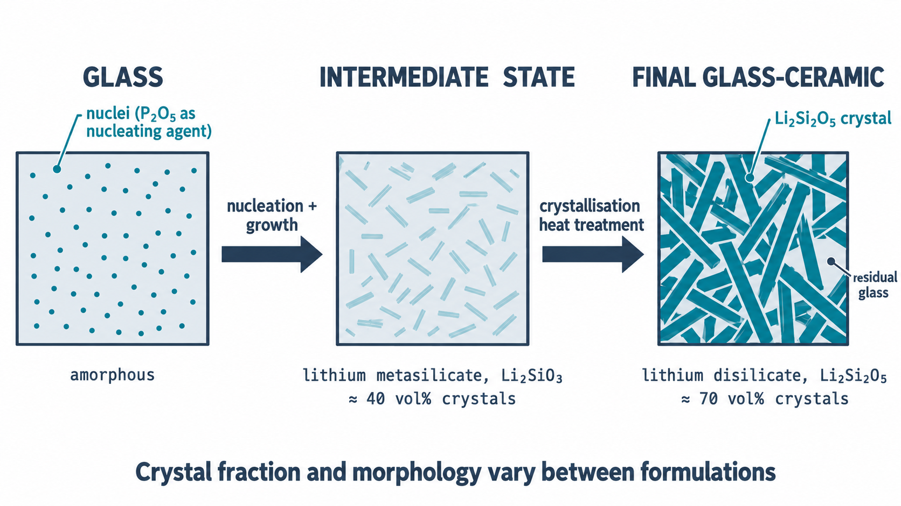
Zhang et al., J Dent Res 2023;102:245–53; Nejat 2025.
Part 3 · Lithium disilicate glass-ceramics
Crystallisation firing: from lithium metasilicate to lithium disilicate
The partially crystallised block (blue in colour before firing) holds ≈ 40 vol% lithium metasilicate (Li₂SiO₃) — soft enough to mill.
At ≈ 660 °C, silica (cristobalite) crystallises from the glass.
At ≈ 735–770 °C: Li₂SiO₃ + SiO₂ → Li₂Si₂O₅.
Result: ≈ 70 vol% elongated, interlocked lithium disilicate crystals. Conversion starts near 735–770 °C; firing programmes hold at ≈ 840–850 °C to complete it.
Phase evolution measured by in-situ X-ray diffraction (schematic redrawing).
Ortiz et al., Dent Mater 2019;35:697–708; Zhang et al. 2023.
Part 3 · Lithium disilicate glass-ceramics
Crystallisation brings a large change in strength with very little shrinkage
≈ 0.2 %
linear shrinkage on crystallisation
vs ≈ 20 % sintering shrinkage of zirconia
130 → 360 MPa
biaxial strength, blue → crystallised
manufacturer data — typical example; values differ between sources
≈ 840–850 °C
crystallisation temperature
programme-specific; slow cooling at the end
MechanismThe glass stays viscous throughout crystallisation, so the restoration hardly deforms: the crystals grow inside an almost rigid body.
Zhang et al. 2023 (0.2 % vs 20 %); Ivoclar Vivadent Scientific Documentation IPS e.max CAD, 2011 (manufacturer data).
Part 3 · Lithium disilicate glass-ceramics
Microstructure: interlocked elongated crystals
Rod-like crystals, a few micrometres long and below one micrometre thick (≈ 5 × 0.8 µm in a pressed material).
The crystals interlock and fill most of the volume; glass remains between them.
Crystal size and shape can be tuned by the heat treatment.
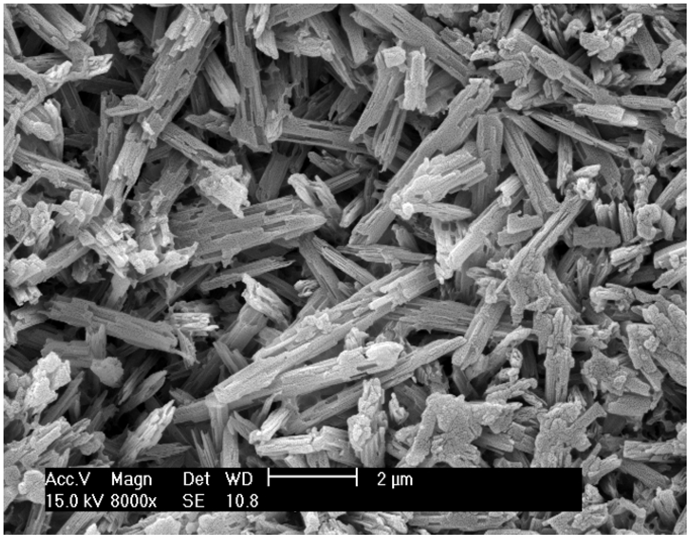
Heat-pressed lithium disilicate, etched (SEM; scale bar 2 µm). Denry & Holloway 2010, CC BY 3.0; product label masked.
Denry & Holloway, Materials 2010;3:351–68 (Fig. 4, CC BY 3.0); Ortiz et al. 2019.
Part 3 · Lithium disilicate glass-ceramics
Same class, different materials
43–80 vol%
crystalline content
13 commercial lithia glass-ceramics
210–624 MPa
biaxial flexural strength
same method, one laboratory
1.4–2.4
KIc, MPa·m½
same study
Important qualificationWithin one class, strength varies about threefold. The class name alone does not fix the properties: the specific formulation and processing do.
Zhang et al., J Dent Res 2023 (table of commercial lithia glass-ceramics; values measured with one method).
Part 3 · Lithium disilicate glass-ceramics
Strengthening and toughening are not the same
Strengthening
Raises the stress needed to start fracture
Fewer or smaller flaws (better processing, polishing)
Compressive residual stress at the surface
Measured as flexural strength (MPa)
Toughening
Raises the resistance to crack propagation
Microstructure deflects, bridges or shields the crack
Measured as fracture toughness KIc (MPa·m½)
Often raises strength as a consequence
NoteKelly et al. distinguish intrinsic toughening (ahead of the crack tip) from extrinsic toughening (in the crack wake).
Kelly et al., Dent Mater 2017;33:1192–1204.
Part 3 · Lithium disilicate glass-ceramics
Crack deflection: a longer, tortuous path
In glass, a crack runs straight.
Equiaxed crystals deflect it moderately.
Elongated, interlocked crystals force it to deflect, twist and branch repeatedly.
MechanismEach change of direction lowers the driving force at the crack tip and consumes energy → higher fracture toughness.
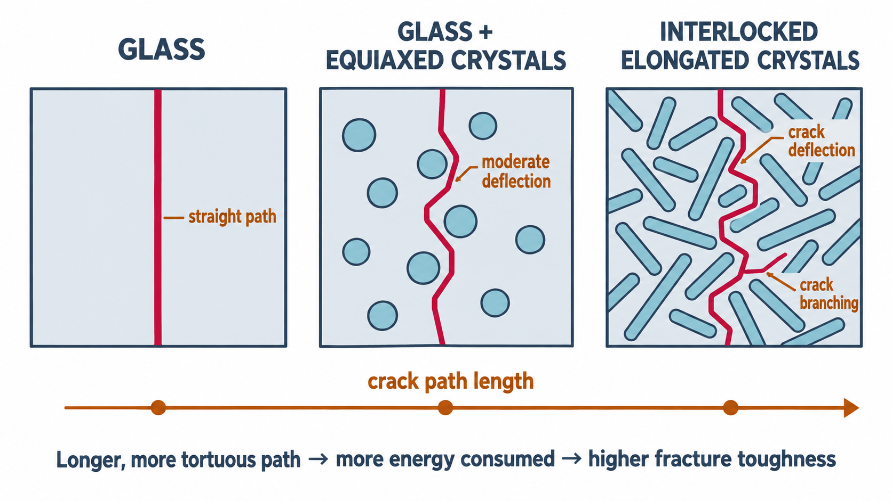
Kelly et al. 2017; Belli et al., Dent Mater 2014 (deflection and branching by lithium disilicate crystals).
Part 3 · Lithium disilicate glass-ceramics
Crack bridging: crystals hold the crack faces together
Behind the crack tip, in the crack wake (the already-cracked region), intact elongated crystals can span the two crack faces.
These bridges carry load and shield the crack tip (extrinsic toughening).
Bridges degrade under repeated loading — one origin of fatigue in crystalline ceramics (Part 5).
Important qualificationFor lithium disilicate, deflection, twisting and microcracking are the documented mechanisms; bridging is the general extrinsic mechanism of elongated-crystal microstructures.
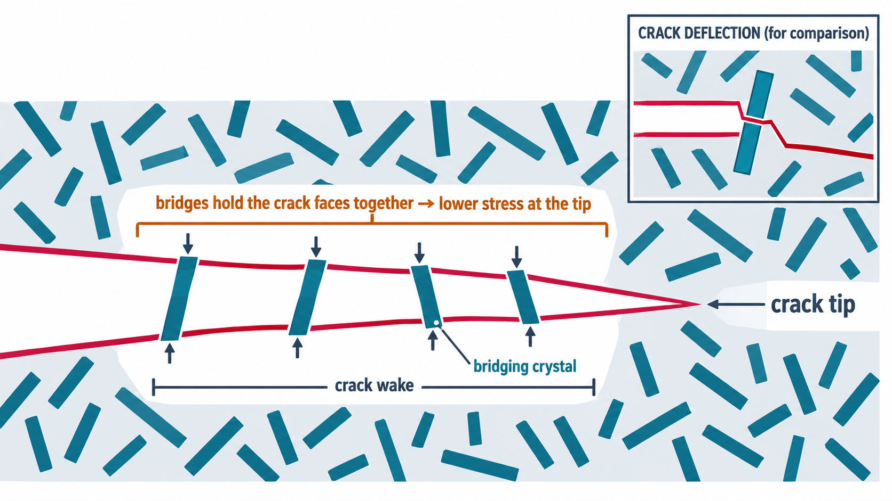
Kelly et al. 2017.
Part 3 · Lithium disilicate glass-ceramics
A real crack in lithium disilicate
The crack meanders between and through the crystals.
In pressed lithium disilicate, cracks run preferentially through the glass phase.
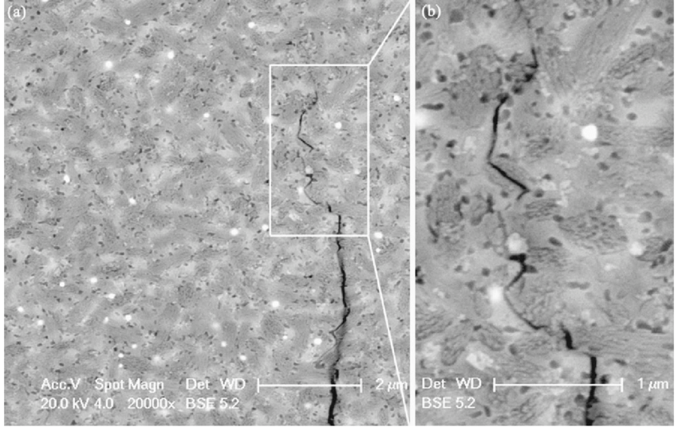
Crack path in a lithium disilicate glass-ceramic (SEM).
Belli et al. 2014. Micrograph from the course archive (original source not identified).
Part 3 · Lithium disilicate glass-ceramics
Residual stress around the crystals: a proposed mechanism
Lithium disilicate crystals and the residual glass have different thermal expansion.
On cooling, this mismatch is proposed to create tangential compressive stresses around the crystals, which may deflect cracks and raise strength.
Layered crystals cleave easily along their planes but resist cracks across them.
Important qualificationThis residual-stress explanation is proposed (“likely”, “potentially”) rather than demonstrated; no stress values are given in the reviews that state it.
Denry & Holloway 2010; Nejat 2025.
Part 3 · Lithium disilicate glass-ceramics
Mechanical properties of lithium disilicate
≈ 2–2.5
KIc, MPa·m½
e.g., 2.13 for one milled material; reported range 2–3.5
≈ 100 GPa
elastic modulus
96–108 GPa across products
462 vs 260 MPa
strength of the same product
biaxial (Zhang) vs 4-point bending (Belli)
Methodological limitationThe same milled lithium disilicate measured ≈ 462 MPa in biaxial flexure and ≈ 260 MPa in 4-point bending. Strength is a property of material and test.
Zhang et al. 2023; Kelly et al. 2017; Belli et al. 2014.
Part 3 · Lithium disilicate glass-ceramics
Optical behaviour: light in a glass-ceramic
Light can be transmitted, reflected, refracted, scattered, absorbed or re-emitted (fluorescence).
Transmission is high when crystals and glass have similar refractive indices, and when crystals and pores are small relative to the wavelength.
Thin, glass-rich restorations are more translucent; thick ones more opaque.
Important qualificationIn lithium disilicate blocks, the high-translucency version has fewer, larger crystals and the low-translucency version a high density of smaller ones: translucency depends on number, size and refractive index, not only on crystal fraction.
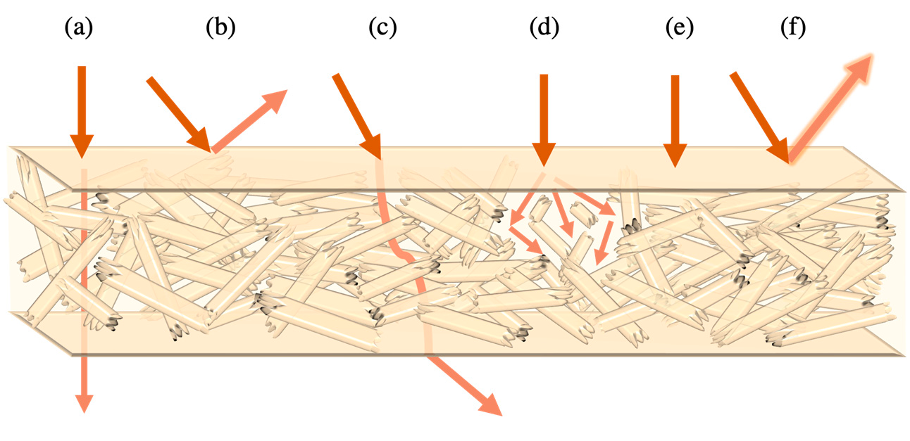
Light pathways in a lithium silicate-based ceramic. Al-Johani et al. 2024, CC BY 4.0.
Al-Johani et al. 2024 (Fig. 15, CC BY 4.0); Denry & Holloway 2010 (HT vs LT blocks).
Part 3 · Lithium disilicate glass-ceramics
Wear behaviour of lithium disilicate
The glass matrix wears faster than the crystals; crystals are then exposed and lost (fatigue wear).
A rough lithium disilicate surface tends to become smoother with wear cycling; a smooth (glazed or polished) one tends to become rougher.
Although softer than zirconia, lithium disilicate can cause more enamel wear in some studies.
InterpretationHardness does not predict how much a ceramic wears the opposing enamel.
Kyaw et al. 2024 (narrative review of tribological studies).
Part 3 · Lithium disilicate glass-ceramics
Water and the residual glass
The residual glass is a silicate: water reacts with strained Si–O–Si bonds at crack tips (stress corrosion).
Under cyclic loading in water, the strength of lithia glass-ceramics fell by up to a factor of 2–3 over a million cycles.
In 4-point bending fatigue, a pressed lithium disilicate lost ≈ 30 % of its strength after 10⁴ cycles — the smallest loss among the materials tested.
NoteThe mechanism is developed in Part 5.
Zhang et al. 2023; Belli et al. 2014 (29.6 % loss); Kelly et al. 2017.
Part 3 · Lithium disilicate glass-ceramics
Etching and silane: why lithium disilicate bonds well
HF dissolves the interstitial glass and exposes the interlocked crystals.
The etched surface is more wettable: on a lithium silicate glass-ceramic, the contact angle fell from ≈ 39° to ≈ 18° after 5 % HF.
Silane then couples the exposed silica to the resin cement.
Practical consequenceBecause it has a glass phase, lithium disilicate can be adhesively bonded with the same chemistry as porcelain.
Al-Johani et al. 2024 (contact angles, Fig. 14); Zhang et al. 2023 (etching and silanisation).
Part 3 · Lithium disilicate glass-ceramics
Lithium disilicate: summary
Aspect
Key point
Microstructure
≈ 65–70 vol% interlocked Li₂Si₂O₅ rods in residual glass; Li₃PO₄ minor phase
A dense aggregate of crystalline grains, consolidated by sintering a powder, with no glass phase between the grains.
Grains meet at grain boundaries.
No glass → higher strength and toughness, but no HF-etchable phase and, traditionally, lower translucency.
Dental examples: alumina (Al₂O₃) and, above all, zirconia (ZrO₂).
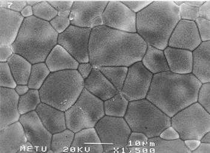
Polycrystalline microstructure: grains and grain boundaries (SEM; scale bar 10 µm).
Nejat 2025. Micrograph from the course archive.
Part 4 · Polycrystalline ceramics
Glass-ceramic and polycrystal compared
Glass-ceramic (e.g., lithium disilicate)
Crystals grown inside a glass
Residual glass between crystals
Shaped as glass; small shrinkage on crystallisation
HF-etchable
Polycrystal (e.g., zirconia)
Grains packed directly against each other
No glass at the boundaries
Shaped as a powder compact; large shrinkage on sintering
Not etchable by HF
Nejat 2025; Zhang et al. 2023; Denry & Holloway 2010.
Part 4 · Polycrystalline ceramics
Alumina: the first high-strength dental polycrystal
Densely sintered alumina: sintered at ≈ 1550 °C with 12–20 % shrinkage, mean grain size ≈ 4 µm, flexural strength ≈ 600 MPa.
Glass-infiltrated alumina (68 vol% alumina, 27 vol% glass, 5 vol% pores): a porous alumina skeleton filled with glass.
Alumina is opaque; it has been largely replaced by zirconia and lithium disilicate.
NoteGrain pull-out, bridging and crack deflection were reported in glass-infiltrated alumina.
Glass-infiltrated alumina (SEM).
Denry & Holloway 2010. Micrograph from the course archive.
Part 4 · Polycrystalline ceramics
Zirconia: applications
Frameworks for crowns and fixed dental prostheses, veneered with porcelain
Monolithic crowns and prostheses, including posterior and multi-unit
Implant abutments and implant-supported prostheses
Clinical significanceZirconia is chosen where high stresses are expected; its limitations are appearance, ageing behaviour and bonding — all explained by its microstructure.
Zirconia frameworkAfter veneering
Nejat 2025. Photographs from the course archive.
Part 4 · Polycrystalline ceramics
Zirconia has three crystal phases
Monoclinic (m): stable from room temperature to ≈ 1170 °C.
Tetragonal (t): stable from ≈ 1170 to ≈ 2370 °C.
Cubic (c): stable from ≈ 2370 °C to the melting point.
On cooling, t → m is accompanied by a volume increase of about 3–5 % (≈ 4.5 %).
Phase stability of unalloyed zirconia (temperatures approximate).
Volpato et al. 2011 (InTech, open access): 1170 °C, 2370 °C, 3–5 %; Denry & Holloway 2010: ≈ 4.5 %.
Part 4 · Polycrystalline ceramics
Why pure zirconia cannot be used
Sintering
Zirconia is sintered well above 1170 °C, where it is tetragonal.
Cooling
Passing ≈ 1170 °C, the grains transform to monoclinic and expand by several percent.
Result
The expansion cannot be accommodated in a dense body: the ceramic cracks on cooling.
Practical consequenceDental zirconia must be stabilised so that the tetragonal (or cubic) phase is retained at room temperature.
Denry & Holloway 2010; Volpato et al. 2011.
Part 4 · Polycrystalline ceramics
Yttria stabilisation
Yttria (Y₂O₃) is dissolved in the zirconia lattice: Y³⁺ replaces Zr⁴⁺.
To keep charge balance, one oxygen site is left vacant for every two Y³⁺.
Dopant and vacancies stabilise the tetragonal and cubic structures at room temperature.
In the sintering furnaceMilled, pre-sinteredSintered
Practical consequenceSintering removes the porosity: the framework shrinks by ≈ 20 % linearly and roughly doubles in density; a 20 % shrinkage requires milling ≈ 25 % oversize (1/0.8 = 1.25). (The photographs are not to the same scale.)
Al-Haj Husain et al. 2022; Zhang et al. 2023 (≈ 20 %); Craig's, 13th ed. Photographs from the course archive.
Part 4 · Polycrystalline ceramics
Sintering temperature and time control grain size
Higher temperature or longer hold → larger grains.
In one study, strength was highest after sintering at 1400–1550 °C; defects appeared above 1650 °C.
Larger tetragonal grains are less stable: more prone to spontaneous transformation and ageing.
Important qualificationEffects of speed sintering are product-dependent: unchanged properties in some 5Y materials, grain growth and loss of translucency in others.
3Y-TZP sintered 2 h at 1300 °C (a) and 1500 °C (b) (scale bars 1 µm). Denry & Holloway 2010, CC BY 3.0.
Denry & Holloway 2010 (Fig. 10); Stawarczyk et al., Clin Oral Investig 2013; Liu et al., Dent Mater 2022; Lawson & Maharishi 2020.
Part 4 · Polycrystalline ceramics
Mechanical properties of zirconia
≈ 5–7
KIc, MPa·m½
zirconia and alumina
up to ≈ 250 GPa
elastic modulus
top of the ceramic range
768 MPa
3Y-TZP, 4-point bending in water
one laboratory study
Methodological limitationManufacturer catalogues list higher values (e.g., 1150–1200 MPa for 3Y, 750–850 for 4Y, 550 for 5Y) obtained with different tests; they show the trend, not comparable numbers.
Belli et al. 2014; Nejat 2025 (Table 1, manufacturer data).
Part 4 · Polycrystalline ceramics
Why 3Y zirconia is opaque: birefringence
Tetragonal crystals are optically anisotropic: their refractive index depends on direction.
Neighbouring grains are oriented differently, so light meets a refractive-index change at every grain boundary and is scattered.
Cubic grains are isotropic: the same index in all directions → less scattering.
MechanismThis is why adding cubic phase (4Y, 5Y) increases translucency.
Silva et al. 2017; Nejat 2025.
Part 4 · Polycrystalline ceramics
Levers that increase the translucency of zirconia
Lever
Why it works
Trade-off
Add cubic phase (more yttria)
Isotropic grains scatter less
Less transformation toughening
Increase density (fewer pores)
Pores scatter strongly
—
Reduce alumina additions and impurities
Fewer second-phase scatterers
Alumina may help ageing resistance
Grains much smaller than the wavelength of light
Reduce birefringent scattering
Processing control
Alternatively, larger grains
Fewer boundaries
Not usable for 3Y: destabilises the tetragonal phase
Antagonist enamel wear rises sharply when ceramic roughness (Ra, average surface roughness) exceeds Ra ≈ 1.5 µm — the order of roughness produced by adjustment burs.
Glaze on zirconia wears away clinically after about six months and can act as an abrasive.
Polished zirconia generally wears enamel less than glazed zirconia in vitro.
InterpretationFor zirconia, the surface finish matters more than the hardness of the material.
Kyaw et al. 2024.
Part 4 · Polycrystalline ceramics
Low-temperature degradation (LTD, ageing)
LTD (also called ageing or hydrothermal degradation): in a humid environment, tetragonal grains at the surface can transform to monoclinic without a crack.
The transformation spreads inward from the surface, with microcracking, grain pull-out and roughening.
Smaller grains, adequate stabiliser and dense, well-finished surfaces slow the process.
Denry & Holloway 2010; Kyaw et al. 2024.
Part 4 · Polycrystalline ceramics
Ageing in context
ISO 13356 (zirconia implants): ≤ 25 % monoclinic after 5 h of accelerated ageing.
Susceptibility is brand-dependent in laboratory ageing tests.
5Y zirconia, with about half cubic phase, does not undergo hydrothermal degradation in the cited study.
There is no clinical evidence linking failure of dental Y-TZP restorations to this type of ageing.
Important qualificationAccelerated laboratory ageing shows a mechanism; it does not by itself predict clinical lifetime.
Denry & Holloway 2010 (ISO 13356); Silva et al. 2017; Kyaw et al. 2024 (Madanshetty et al.).
Part 4 · Polycrystalline ceramics
Bonding to zirconia
No glass phase → HF does not create micromechanical retention.
Surface roughening by air abrasion is the usual mechanical step.
10-MDP (a phosphate monomer) bonds chemically to the zirconia oxide surface; its methacrylate end copolymerises with the resin cement.
Important qualificationAir abrasion roughens the surface but can also induce t → m transformation and surface damage.
Nejat 2025 (glass phase and bonding; air abrasion in manufacturer instructions). Adhesion is treated in Lecture 12.
Part 4 · Polycrystalline ceramics
Polycrystalline ceramics: summary
Alumina
3Y zirconia
4Y zirconia
5Y zirconia
Main phase
α-Al₂O₃
Tetragonal (> 90 %)
≈ 75 % t / 25 % c
≈ 50 % t / 50 % c
Transformation toughening
No
Yes (highest)
Reduced
Lowest
Strength / toughness
High
Highest
Intermediate
Lowest of the zirconias
Translucency
Opaque
Lowest of the zirconias
Intermediate
Highest
Ageing (LTD)
Not applicable
Possible
Possible
Not observed in cited study
Glass phase for HF etching
No
No
No
No
Denry & Holloway 2010; Nejat 2025; Silva et al. 2017; Kyaw et al. 2024.
The degradation (weakening) of a structural component under the influence of mechanical, chemical or biological stress — in most cases a combination of them.
Restorations are loaded far below their fracture strength, but millions of times, in a wet environment.
Clinical failure appears as chipping (partial fracture) or catastrophic fracture of the whole restoration.
Fracture often occurs at loads far below the measured strength because flaws grow during service.
Kelly et al., Dent Mater 2017;33:1192–1204.
Part 5 · Fatigue
Every ceramic contains flaws
Pores, inclusions, machining and grinding damage, and surface scratches.
A flaw concentrates stress at its tip: the local stress can be many times the applied stress.
Strength is inversely related to the size of the largest flaw in the stressed region (Griffith).
Clinical significanceSurface condition (polishing, grinding, adjustment) changes the flaw population — and therefore the strength of the restoration.
Kelly et al. 2017; Zhang et al. 2023 (machining reduced strength by more than a factor of 2).
Part 5 · Fatigue
Fractography: reading a fracture surface
The fracture surface of a failed restoration preserves markings that point back to the origin.
In clinically failed crowns, origins are often at the intaglio surface or at the veneer–framework interface.
Fractography connects a clinical failure to a specific flaw and stress state.
Fractographic analysis of a fractured crown (SEM).
Kelly et al. 2017. Image from the course archive (published figure; original source to be confirmed).
Part 5 · Fatigue
Strength, toughness and fatigue resistance are different properties
Strength (MPa)
Stress at which fracture starts
Depends on the material and on the largest flaw
Changes with surface finish, size and test
Fracture toughness (MPa·m½)
Resistance to propagation of an existing crack
A material property, set by microstructure
Method-dependent when measured
Fatigue resistance
Ability to retain strength over time and cycles
Depends on slow crack growth and cyclic damage
Ranking may differ from ranking by strength
Kelly et al. 2017; Cesar et al. 2017; Zhang et al. 2023.
Part 5 · Fatigue
Strength depends on toughness and on flaw size
From KIc = Y·σf·√(πc): σf = KIc / (Y√(πc)).
Doubling toughness doubles strength for the same flaw.
A tough material with a large flaw can be weaker than a less tough material with a small flaw.
InterpretationStrength is not a fixed material constant: it is toughness divided by a flaw term.
Calculated with Y = 1.12 (surface crack); illustrative, not measured data.
Griffith relation as presented by Kelly et al. 2017 and Cesar et al. 2017.
Part 5 · Fatigue
Measuring fracture toughness is method-dependent
KIc requires a crack of known geometry: pre-cracked beams, chevron-notched beams or cracks made by indentation.
Different methods give different values for the same material.
Indentation methods are convenient but the least reliable: they depend on assumptions about crack shape and residual stress.
Methodological limitationWhen comparing KIc values between papers or brochures, check the method first. Values in this lecture are ranges for this reason.
Cesar et al., Dent Mater 2017 (ADM guidance on fracture toughness testing).
Part 5 · Fatigue
The weakest link and the size effect
A ceramic fails from its worst flaw, like a chain from its weakest link.
A larger stressed volume or area is more likely to contain a large flaw.
Therefore large specimens (or large tensile regions) tend to have lower strength.
Practical consequenceSmall laboratory specimens may overestimate the strength of a large restoration loaded over a wide area.
Kelly et al. 2017 (Weibull statistics are mandatory for ceramics).
Part 5 · Fatigue
Weibull statistics: strength as a probability
Ceramic strength is a distribution, not a single value.
Characteristic strength σ₀: the stress at which 63.2 % of specimens fail.
Weibull modulus m: describes the scatter — high m = narrow distribution = predictable.
InterpretationA pressed lithium disilicate had m = 3.45; a feldspathic block had m = 22.5. The weaker material was the more predictable one: strength and reliability are different things.
Two materials with the same σ₀ (160 MPa) and m = 3 or 20 (calculated).
Belli et al., Dent Mater 2014 (Weibull m, 4-point bending).
Part 5 · Fatigue
Stress corrosion: water breaks strained bonds
Water molecules adsorb at the crack tip.
They react with strained Si–O–Si bonds and break them (hydrolysis).
The crack extends at stresses well below those needed for fast fracture: slow (subcritical) crack growth.
Clinical significanceMoisture levels as low as 0.02 % relative humidity can cause stress corrosion in silicate glasses — the mouth is permanently wet.
Kelly et al. 2017.
Part 5 · Fatigue
Slow crack growth shortens service life
Flaws grow slowly under service stresses.
As the flaw grows, the stress intensity at its tip rises and growth accelerates.
Residual strength falls until it meets the service stress: sudden fracture, without warning.
NoteBelow a threshold stress intensity (KI0), cracks do not grow. For Y-TZP in water this threshold was about 50 % below KIc.
Schematic: flaw growth and residual strength over time.
Kelly et al. 2017.
Part 5 · Fatigue
A crack growing step by step
Crack growth below the fracture load is not hypothetical: it can be observed directly.
Sequential images of crack extension (panels a–h).
Image from the course archive (published figure; original source to be confirmed).
Part 5 · Fatigue
Three ways to load a specimen in fatigue tests
Static — constant load until fracture (time to failure).
Dynamic — load increased at different constant rates.
Cyclic — loading and unloading at a fixed frequency: the most clinically relevant.
NoteChewing frequency is roughly 0.5–1 Hz; laboratory tests are often accelerated.
Load histories (schematic).
Kelly et al. 2017.
Part 5 · Fatigue
S–N curves: stress versus number of cycles
Each specimen is cycled at a given maximum stress until it fails; the cycles to failure (N) are plotted.
Curve A levels off: below a fatigue limit failure does not occur, often reached beyond 10⁵–10⁶ cycles.
Curve B keeps falling: no limit within the test.
Important qualificationA fatigue limit “may exist”; whether it does depends on the material and on how many cycles are tested.
Schematic S–N curves.
Kelly et al. 2017.
Part 5 · Fatigue
Accelerated protocols: step-stress and staircase
Step-stress: a fixed number of cycles at each load, then the load is raised until failure.
Staircase: each specimen is tested at a load set by the previous result (fail → lower; survive → higher).
These methods estimate fatigue strength at a given number of cycles but not the slow-crack-growth parameters.
Step-stress protocol (schematic).
Kelly et al. 2017; Belli et al. 2014 (staircase, 10⁴ cycles).
Part 5 · Fatigue
Fatigue mechanisms differ by microstructure
Glass-rich: stress corrosion of Si–O–Si dominates.
Glass-ceramic: cyclic loading degrades crack bridges; friction and debris between crack faces.
Polycrystalline: water lowers the crack-growth threshold; interaction with t → m transformation.
InterpretationA ranking by flexural strength is not a ranking by fatigue resistance.
Kelly et al. 2017.
Part 5 · Fatigue
Contact damage in a crown
A cusp loading the crown produces cone (Hertzian) cracks at the contact surface.
Bending of the crown produces radial cracks that start at the inner (intaglio) surface, in tension.
Radial cracks from the intaglio surface have been identified as fracture origins in clinically failed crowns.
Clinical significanceThe most dangerous surface is often the one that cannot be seen or polished: the intaglio surface.
Kelly et al. 2017; Zhang et al. 2023 (intaglio surface never polished).
Part 5 · Fatigue
Strength before and after cyclic loading in water
All materials lost strength (≈ 30–62 %); the ranking after fatigue is not identical to the ranking before.
Mean 4-point flexural strength before and after 10⁴ cycles (staircase, water, 37 °C).
Belli et al., Dent Mater 2014. Material names generalised; product names in the original paper.
Part 5 · Fatigue
From laboratory fatigue data to the clinic
Specimens are usually polished bars or discs; restorations have ground intaglio surfaces, complex shapes and cement layers.
Loads, frequencies and environments are accelerated or simplified.
Tests are often in water but rarely include wear, pH changes and thermal cycling together.
Methodological limitationLaboratory fatigue tests rank mechanisms and materials; they do not give the lifetime of a restoration in a patient.
Kelly et al. 2017; Zhang et al. 2023.
Part 5 · Fatigue
Fatigue: summary
Concept
Key point
Flaws
Every ceramic has them; the largest one in the tensile region controls strength
Toughness vs strength
KIc is a material property; strength = KIc ÷ flaw term
Weibull
Strength is a distribution; m measures reliability, not strength
Slow crack growth
Water breaks strained Si–O–Si bonds; flaws grow below the fracture stress
Cyclic fatigue
Degrades bridges and crack-face friction; adds to slow crack growth
Clinical link
Radial cracks from the intaglio surface; cone cracks at contacts; chipping of veneers
Part 6 of 6
06
Synthesis: four tables and a comparison with resin composites
Classification· properties· mechanisms· optics and wear· ceramics vs composites
Part 6 · Synthesis
Table 1 · Classification and microstructure
Material
Class
Main crystalline phase
Glass
Shaped by
Feldspathic porcelain
Predominantly glassy
Leucite, ≈ 15–25 vol%
Majority
Powder build-up + sintering
Leucite-reinforced
Glass-ceramic
Leucite, ≈ 35–45 vol%
Yes
Pressing or milling
Lithium disilicate
Glass-ceramic
Li₂Si₂O₅, ≈ 65–70 vol%
Residual
Pressing or milling + crystallisation
Alumina
Polycrystalline
α-Al₂O₃
No
Powder + sintering
3Y zirconia
Polycrystalline
Tetragonal ZrO₂ (> 90 %)
No
Milling pre-sintered + sintering
4Y / 5Y zirconia
Polycrystalline
Tetragonal + cubic (≈ 25 / 50 % c)
No
Milling pre-sintered + sintering
Denry & Holloway 2010; Nejat 2025; Silva et al. 2017.
Part 6 · Synthesis
Table 2 · Properties, with the method that produced them
Material
Flexural strength (MPa)
KIc (MPa·m½)
Modulus (GPa)
Translucency
Feldspathic porcelain
≈ 60–70 (4-pt, various)
≈ 0.7–1.5
≈ 65 (low end)
High
Leucite-reinforced
≈ 2 × feldspathic
≈ 1
—
High
Lithium disilicate
≈ 260 (4-pt) / 462 (biaxial)
≈ 2–2.5
≈ 100
Medium–high
3Y zirconia
768 (4-pt, water)
≈ 5–7
up to ≈ 250
Low
5Y zirconia
550 (manufacturer)
lower than 3Y
—
Highest of the zirconias
Methodological limitationValues come from different studies and tests; read the trend down each column, not differences of a few MPa.
Denry & Holloway 2010; Belli et al. 2014; Zhang et al. 2023; Silva et al. 2017 (leucite glass-ceramic KIc 1.03); Nejat 2025 (manufacturer data).
Part 6 · Synthesis
Table 3 · Strengthening and toughening mechanisms
Mechanism
Type
Where it operates
Evidence
Compressive residual stress (veneer on metal)
Strengthening
Metal-ceramic (matched contraction)
Established design principle
Tangential compression around crystals
Strengthening / deflection
Leucite; lithium disilicate
Leucite: experimental; LD: proposed
Crack deflection and twisting
Intrinsic toughening
Lithium disilicate; leucite; alumina
Documented (SEM)
Crack bridging
Extrinsic toughening
Elongated crystals; alumina grains
Reported; degrades under cycling
Transformation toughening
Extrinsic toughening
Tetragonal zirconia (3Y > 4Y > 5Y)
Established
Reducing flaw size (polishing, density)
Strengthening
All ceramics
Established
Denry & Holloway 2010; Kelly et al. 2017; Belli et al. 2014; Nejat 2025.
Part 6 · Synthesis
More crystalline does not mean less translucent
Scattering depends on refractive-index differences, birefringence, pores and thickness — not on crystalline fraction alone.
Al-Johani et al. 2024; Silva et al. 2017; Nejat 2025.
Part 6 · Synthesis
Wear is a property of a system, not of a material
Wear depends on both surfaces, the load and its direction, the lubricant (saliva), third bodies and time.
Hardness alone does not predict enamel wear: harder zirconia can wear enamel less than softer ceramics.
Toughness alone does not predict it either.
InterpretationDo not generalise a wear result from one ceramic to ‘ceramics’.
Kyaw et al. 2024.
Part 6 · Synthesis
Surface condition controls antagonist wear
Glaze fragments act as abrasives; lithium disilicate loses matrix and crystals; zirconia keeps its initial finish — smooth or rough.
Kyaw et al. 2024 (Ra ≈ 1.5 µm threshold).
Part 6 · Synthesis
Ceramics and resin composites: two different structures
Ceramic: an inorganic network of glass and/or crystals; negligible water sorption.
Resin composite: inorganic filler in a polymer matrix, coupled by silane; the matrix absorbs water and the filler–matrix interface can hydrolyse.
Both are affected by water, by different mechanisms
Optical behaviour
From highly translucent (glass-rich) to opaque (3Y)
Depends on filler and matrix
Neither class is uniformly ‘more aesthetic’
Antagonist wear
System-dependent; polished zirconia low, rough or glazed surfaces higher
System-dependent
Hardness does not predict enamel wear
Processing
High-temperature firing, crystallisation or sintering
Polymerisation at body temperature
Determines shrinkage and flaw populations
Belli et al. 2014; Kyaw et al. 2024; Al-Johani et al. 2024; Lecture 11.
Part 6 · Synthesis
Advantages and limitations, stated with their conditions
Ceramics: advantages
High stiffness; dimensional and chemical stability
Optical properties close to enamel when glass-rich
Very high toughness in tetragonal zirconia
Stable polished surfaces (zirconia)
Ceramics: limitations
Brittle; fail suddenly from flaws
Slow crack growth in water (glass phases)
Glass-rich ceramics have low toughness
Zirconia: opacity (3Y), ageing susceptibility, no HF etching
Synthesis of Parts 1–5.
Part 6 · Synthesis
Statements that need qualification
Statement
Why it is too simple
“Ceramics are always stronger than composites.”
A feldspathic block (66 MPa) was weaker than direct composites (120–139 MPa) in the same study.
“Composites always have lower toughness.”
Glass-rich ceramics (0.7–1.5) overlap with or fall below composites (1–2 MPa·m½).
“Ceramics always cause more wear.”
Wear is a system response; in vitro, polished zirconia caused less enamel wear than an opposing enamel surface did.
“Ceramics are always more aesthetic.”
3Y zirconia is opaque; translucency depends on microstructure and thickness.
“More crystalline means less translucent.”
Crystal size, number, refractive index and birefringence matter more.
“One ceramic is best.”
Each class trades strength, toughness, translucency, stability and bondability.
Belli et al. 2014; Kyaw et al. 2024; Denry & Holloway 2010; Silva et al. 2017.
Take-home
Dental ceramics — the essentials
1
Brittle by bonding. Ionic–covalent bonds prevent plastic flow; fracture starts from the largest flaw in tension.
2
Glass, crystals, grains. Glassy, glass-ceramic and polycrystalline classes differ in glass content — and so in strength, translucency and etchability.
3
Heat makes the microstructure. Firing densifies porcelain, crystallisation grows disilicate, sintering densifies zirconia and sets its grain size.
4
Toughening is microstructural. Deflection and bridging in glass-ceramics; transformation toughening in tetragonal zirconia.
5
Strength is not fixed. It depends on flaws, test method and time: water and cycling make cracks grow below the fracture stress.
6
No universal winner. Every comparison with composites or between ceramics needs its conditions stated.
References
Main sources
Al-Johani H, Haider J, Satterthwaite J, Borba M, Silikas N. A comprehensive review of the multifaceted characterisation approaches of dental ceramics. Prosthesis 2024;6:1055–90. doi:10.3390/prosthesis6050077 (CC BY 4.0).
Belli R, Geinzer E, Muschweck A, Petschelt A, Lohbauer U. Mechanical fatigue degradation of ceramics versus resin composites for dental restorations. Dent Mater 2014;30:424–32. doi:10.1016/j.dental.2014.01.003
Cesar PF, Della Bona A, Scherrer SS, et al. ADM guidance — Ceramics: fracture toughness testing and method selection. Dent Mater 2017;33:575–84. doi:10.1016/j.dental.2017.03.006
Denry I, Holloway JA. Ceramics for dental applications: a review. Materials 2010;3:351–68 (CC BY 3.0).
Kelly JR, Cesar PF, Scherrer SS, et al. ADM guidance — Ceramics: fatigue principles and testing. Dent Mater 2017;33:1192–1204. doi:10.1016/j.dental.2017.09.006
Kyaw O, Inokoshi M, Kanazawa M. Tribological aspects of enamel wear caused by zirconia and lithium disilicate: a meta-narrative review. Jpn Dent Sci Rev 2024;60:258–70.
Nejat AH. Overview of current dental ceramics. Dent Clin N Am 2025;69:155–71. doi:10.1016/j.cden.2024.11.001
Silva LH, Lima E, Miranda RBP, Favero SS, Lohbauer U, Cesar PF. Dental ceramics: a review of new materials and processing methods. Braz Oral Res 2017;31(suppl):e58.
Zhang Y, Vardhaman S, Rodrigues CS, Lawn BR. A critical review of dental lithia-based glass–ceramics. J Dent Res 2023;102:245–53.
Volpato CAM, et al. Application of zirconia in dentistry: biologic, mechanical and optical considerations. In: Advances in Ceramics. InTech; 2011 (open access).
References
Sources for processing, firing and sintering
Al-Haj Husain N, Özcan M, Dydyk N, Joda T. Conventional, speed sintering and high-speed sintering of zirconia: a systematic review. J Clin Med 2022;11:4892.
Albakry M, Guazzato M, Swain MV. J Dent 2004;32:91–9.
Barghi N, Goldberg J. J Prosthet Dent 1977;37:173–5.
Cheung KC, Darvell BW. Dent Mater 2002;18:163–73.
de Lima et al. J Mech Behav Biomed Mater 2022;126:104995.
Denry IL, Mackert JR, et al. J Dent Res 1996;75:1928–35.
Mackert JR, Evans AL. J Dent Res 1991;70:137–9. · Mackert JR, et al. J Dent Res 1995;74:1259–65.
Ortiz AL, Borrero-López O, Guiberteau F, Zhang Y. Dent Mater 2019;35:697–708.
Stawarczyk et al. Clin Oral Investig 2013;17:269–74. · Liu et al. Dent Mater 2022;38:451–68. · Lawson & Maharishi. J Esthet Restor Dent 2020;32:219–25.
Tholey, Swain & Thiel. Dent Mater 2011;27:1102–10. · Wadsworth FB, et al. Proc R Soc A 2016;472:20150780.